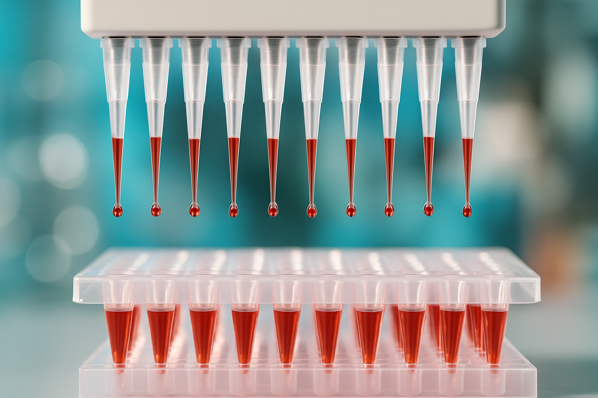
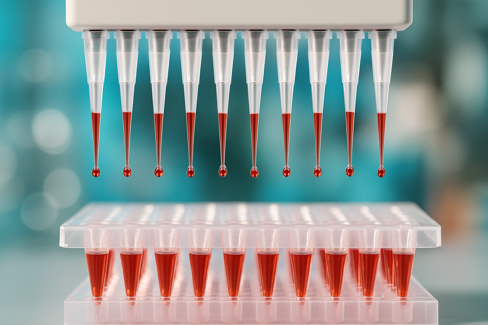
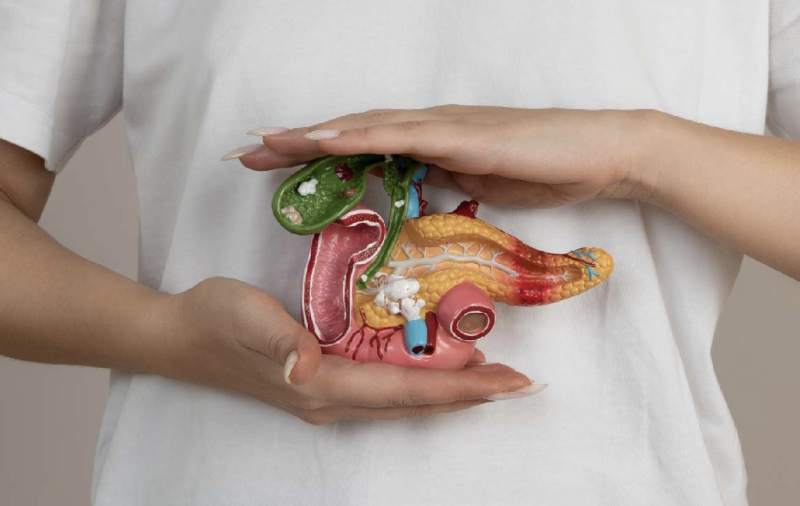
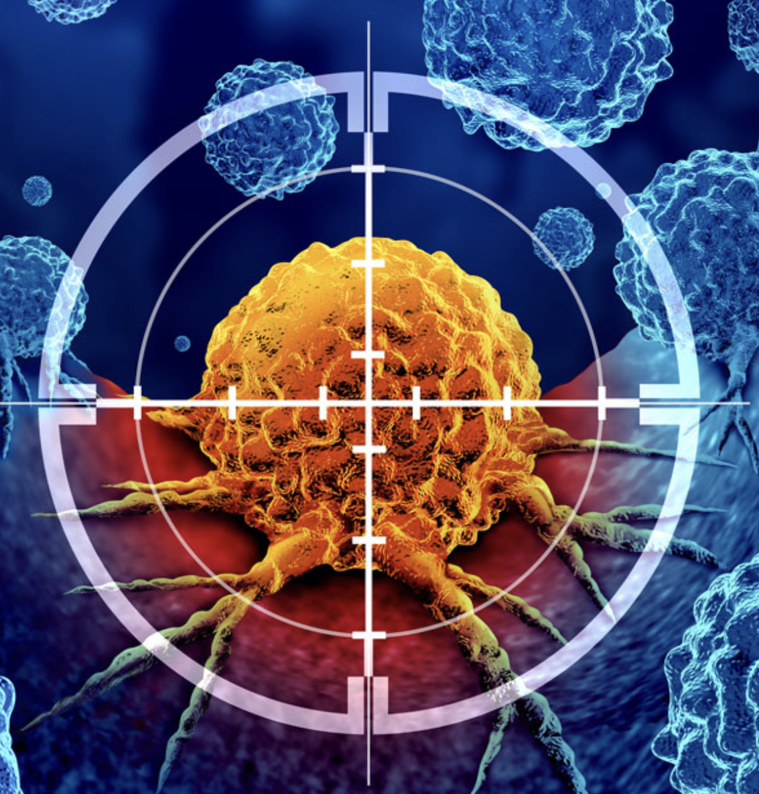

May 9, 2025
Pancreatic cancer remains one of the most lethal malignancies, with a five-year survival rate lingering below 10%. This dismal prognosis is largely attributed to the disease’s asymptomatic nature in early stages and the absence of effective early detection methods. Recognizing this critical gap, the LaserBlood project emerges as a beacon of hope, aiming to revolutionize pancreatic cancer diagnosis through innovative biophotonic technologies. Here, we summarize our three-part series on pancreatic cancer and the urgent need for an early detection method - LaserBlood.
 

Despite previous failures in early pancreatic cancer detection, researchers have found hope in a disease-specific “protein corona” that forms around nanoparticles. The EU-funded LaserBlood project is now exploring this unique biological fingerprint using light-based technology, with the goal of developing a fast, reliable blood test for early diagnosis - LaserBlood.

A national network of Pancreas Units is taking shape in Italy to tackle the growing burden of pancreatic cancer – an initiative that underscores the importance of early diagnosis, at the heart of the Italy-born LaserBlood project - LaserBlood.
Pancreatic cancer only shows symptoms in advanced stages, yet early detection methods are still absent. What efforts have been made so far, and why haven’t they been successful? - LaserBlood.

Cancer cells exhibit altered metabolic activity, enhancing glycolysis over oxidative phosphorylation. By tracking these metabolic changes, fluorescence lifetime imaging (FLIM) emerges as a powerful tool for improving tumor identification and surgical precision, offering new possibilities for enhanced cancer detection and treatment - LaserBlood.

Pancreatic cancer is one of the deadliest malignancies, often remaining undetected until its late stages. With high mortality rates, aggressive progression, and vague, often delayed symptoms, developing an effective early detection method is crucial - LaserBlood.